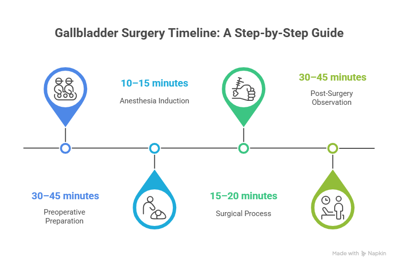
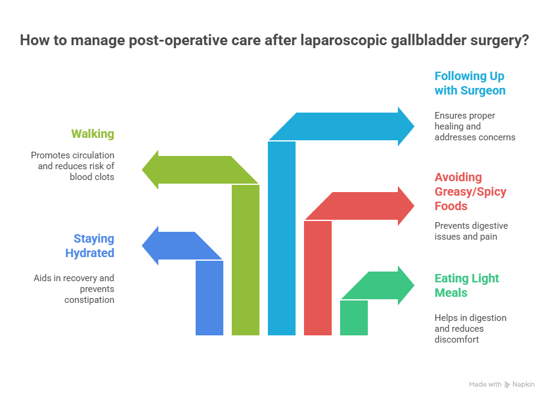

Gallbladder problems such as gallstones or inflammation often require surgery to remove the gallbladder — a procedure known as cholecystectomy. Among the two main surgical approaches, laparoscopic gallbladder surgery is the most preferred because it’s minimally invasive, less painful, and offers a quicker recovery compared to open surgery.
If you are planning to undergo this surgery, one of the most common questions patients ask is — “How long is laparoscopic gallbladder surgery?” Understanding the time involved, both during and after the operation, helps you prepare physically and mentally for the procedure.
How Long is Laparoscopic Gallbladder Surgery?
If you are planning to undergo this surgery, one of the most common questions patients ask is — “How long is laparoscopic gallbladder surgery?”
Book Your Appointment TodayLet’s explore in detail how long laparoscopic gallbladder surgery takes, what factors influence the duration, and what to expect before, during, and after the procedure.
Understanding Laparoscopic Gallbladder Surgery
Laparoscopic gallbladder surgery is a modern surgical method used to remove the gallbladder through tiny incisions. Surgeons use a laparoscope, a thin tube with a camera and light, to view internal organs on a screen. This technique offers a precise and safer alternative to traditional open surgery, which requires a larger incision.
The surgery is commonly performed to treat:
- Gallstones causing pain or infection
- Inflammation of the gallbladder (cholecystitis)
- Blockages in the bile ducts
- Gallbladder polyps
Because of its precision and minimal invasiveness, this procedure has become the standard treatment worldwide, with a very high success rate.
How Long is Laparoscopic Gallbladder Surgery?
The average duration of laparoscopic gallbladder surgery typically ranges between 15 to 20 minutes. However, the exact time for laparoscopic gallbladder surgery can vary depending on several factors such as the complexity of the case, the surgeon’s experience, and the patient’s health condition.
So, in total, from hospital arrival to discharge (if it’s a same-day procedure), patients may spend around 4–6 hours at the hospital.
Step-by-Step Timeline of the Procedure

To understand the operation time for gallbladder removal, let’s look at what happens step-by-step:
1. Preoperative Preparation (30–45 minutes)
Before the procedure begins, you’ll be:
- Checked for vital signs
- Given anesthesia
- Connected to monitoring equipment
- Cleaned and sterilized in the surgical area
This phase ensures your body is stable and ready for surgery.
2. Anesthesia Induction (10–15 minutes)
A general anesthetic is administered so you remain asleep and pain-free during surgery. It takes about 10–15 minutes for anesthesia to take full effect.
3. Surgical Process (15–20 minutes)
The actual laparoscopic gallbladder surgery time varies based on the difficulty level. Here’s what typically happens:
- Incisions: The surgeon makes 3–4 small incisions in the abdomen.
- Insertion of Laparoscope: A small camera is inserted to visualize internal organs.
- Removal of Gallbladder: The surgeon detaches and removes the gallbladder carefully.
- Inspection: The area is checked for any bleeding or leakage.
- Closure: The incisions are sealed with sutures or surgical glue.
If there are complications, such as dense scar tissue or severe inflammation, the surgery might take longer or be converted to an open procedure.
4. Post-Surgery Observation (30–45 minutes)
After the surgery, you’ll be moved to the recovery room. The medical team monitors your vital signs and ensures the anesthesia wears off safely. Once you are awake and stable, you’ll be allowed to go home the same day in most cases.
Factors That Affect the Duration of Surgery
Several elements can influence how long gallbladder surgery takes, including:
1. Patient’s Health Condition
A patient’s overall health plays a key role in how long laparoscopic gallbladder surgery takes. People with obesity, diabetes, or a history of abdominal surgeries may have internal scar tissue that makes the procedure more complex. These factors require the surgeon to work carefully around delicate areas, which can extend the operation time. Healthy patients with no prior complications generally experience shorter surgery durations and faster recovery.
2. Type of Gallbladder Problem
The kind of gallbladder issue being treated affects the total time for laparoscopic gallbladder surgery. For example, routine gallstone removal is often completed within 15-20 minutes. However, when there’s severe inflammation, infection, or gallbladder swelling, the surgeon must proceed slowly and cautiously.
3. Surgeon’s Experience
The experience and precision of the surgeon significantly influence the time required for laparoscopic gallbladder surgery. A highly skilled surgeon, such as Dr. Atul Peter’s is the Best Gallbladder Surgeon in Delhi, can operate efficiently while maintaining patient safety. Their expertise enables them to manage complex anatomy or unexpected complications more effectively, which helps minimize surgical duration and improve overall success rates.
4. Presence of Complications
Unexpected complications during surgery, such as bleeding, bile duct injury, or dense adhesions, can increase the overall duration of the procedure. In such cases, the surgeon may require additional time to carefully control bleeding, identify key structures, and ensure a safe removal process. While this may add 30–60 minutes to the surgery, these precautions are crucial to prevent post-surgical issues and ensure long-term recovery success.
What Happens After Laparoscopic Gallbladder Surgery?
After your surgery, you’ll likely experience mild discomfort or bloating, which improves within a few days. Pain medications and dietary guidelines are provided to help with recovery.

Typical post-operative care includes:
- Eating light meals
- Staying hydrated
- Avoiding greasy or spicy foods
- Walking to promote circulation
- Following up with your surgeon
If you experience symptoms like fever, persistent pain, or vomiting, contact your doctor immediately.
Benefits of Laparoscopic Gallbladder Surgery
Laparoscopic gallbladder removal offers several advantages over open surgery, such as:
- Smaller incisions and minimal scarring
- Less pain and blood loss
- Faster recovery and shorter hospital stay
- Lower risk of infection
- Early return to daily life
Because of these benefits, most surgeons recommend the laparoscopic approach for gallbladder removal whenever possible.
How Long is Laparoscopic Gallbladder Surgery?
If you are planning to undergo this surgery, one of the most common questions patients ask is — “How long is laparoscopic gallbladder surgery?”
Book Your Appointment TodaySummary
In most cases, laparoscopic gallbladder surgery takes around 15-20 minutes, depending on the complexity of the condition and the patient’s overall health. Including preoperative preparation and recovery room observation, the entire hospital process may last about 4–6 hours. Since it is a minimally invasive procedure, patients experience less pain, smaller scars, and faster recovery compared to traditional open surgery.
Choosing an experienced specialist like Dr. Atul Peter’s, widely recognized as the Best Gallbladder Surgeon in Delhi, ensures a safer, quicker, and more efficient surgery. With advanced laparoscopic techniques and personalized care, patients can return to normal life within a few weeks and enjoy long-term relief from gallbladder-related discomfort.
Frequently Asked Questions
How long is laparoscopic Gallbladder Surgery?
Is Laparoscopic Gallbladder Surgery Painful?
Do I need to stay in the hospital after Gallbladder surgery?
When can I return to work after Gallbladder surgery?
Can I live a normal life without a Gallbladder?
What should I eat after Gallbladder surgery?
Is it possible for Gallstones to come back after surgery?
Recommended Further Reading
Have Personal Health Questions?
Consult with Dr. Atul Peters and our expert multidisciplinary team at Max Smart Super Speciality Hospital, Saket, New Delhi.
Book Your Consultation